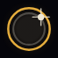
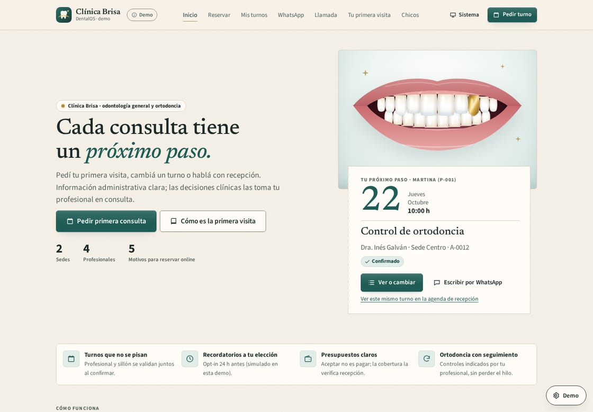
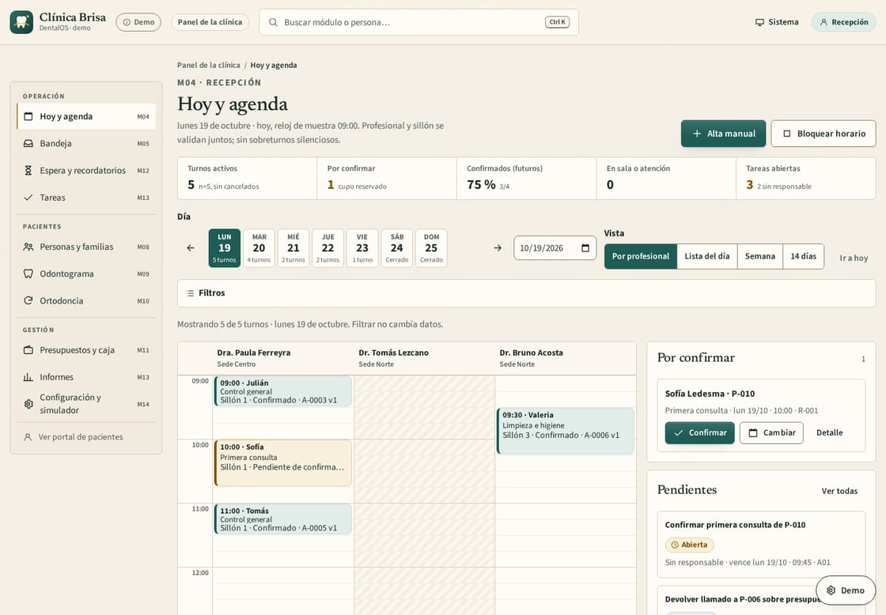

 | ECLIPSE | DentalOS |
|
ODONTOLOGÍA · DENTALOS Cada turno,
con un próximo paso claro.Hola, equipo de Consultorio del Parque. En un consultorio, pedir un turno y continuar la atención administrativa involucra a pacientes y recepción. Preparamos una propuesta para hacer ese recorrido más claro, con información y responsabilidades acordadas. Ejemplo ficticio · apertura sectorial, sin investigación del negocio. |
| ▷ | Trailer pendiente de incorporar 60 segundos · vista previa estática |
Ver cómo funciona · enlace disponible al incorporar el trailer. |
01 / LA EXPERIENCIA Una base para trabajar mejor.01 Llegar mejor orientado Información del consultorio y un recorrido de solicitud de turno para el paciente. |
02 Recepción con contexto Agenda, solicitudes y próximos pasos se pueden explorar con datos ficticios. |
03 Continuidad administrativa La demo permite revisar tareas y seguimiento. No ofrece diagnósticos, tratamientos sugeridos ni resultados clínicos. |
Paciente solicita un turno → Recepción organiza la solicitud → Profesional y recepción siguen tareas |
Clínica Brisa es ficticia. La demo es frontend: sin autenticación, mensajes, llamadas, pagos ni historia clínica productiva. Los roles son vistas de muestra. |
EL RECORRIDO DEL CLIENTE  Portal público de muestra: información y acceso a la solicitud de turno. |
LA VISTA DEL EQUIPO  Agenda demostrativa: contexto compartido para conversar sobre recepción y seguimiento. |
Accesos de demostración con datos ficticios. |
02 / TU PUNTO DE PARTIDA Adaptamos DentalOS a tu negocio desde USD 500Adaptación de marca, información del consultorio y recorrido de consulta sobre la base existente. Agenda persistente, datos de pacientes e integraciones productivas requieren alcance y validación propios. Gamificación estándar incluida. Exploración educativa voluntaria y progreso estándar, sin condicionar atención ni incentivar tratamientos. Contenido clínico sujeto a revisión profesional. Implementación USD 500 Anticipo 50 %: USD 250
Saldo: USD 250 al aprobar la entrega. |
Primero definimos alcance, entregables y factibilidad. El precio corresponde a adaptar una base existente. Definamos tu alcance · pendiente |
CONDICIÓN DE ESTA CAMPAÑA 3 meses de Esencial bonificados.Desde la publicación, bonificamos el equivalente al plan Esencial. Plan elegido: Esencial, USD 0/mes durante los primeros 3 meses; desde el mes 4, USD 30/mes. Si elegís Conectado: USD 45/mes durante la promoción y luego USD 75/mes. Automatización/IA: USD 120 y luego USD 150/mes. |
03 / COMPLEMENTOS CON SENTIDO Software, marca y crecimiento.La asesoría ayuda a definir mensajes, marca y retención. La gestión económica puede complementar la decisión sobre costos y márgenes; se ofrece únicamente con responsable confirmado. Asesoría puntual de growth y marca · USD 150 Revisamos propuesta, mensajes y una acción de captación o retención; acordamos prioridades y una métrica. No incluye identidad completa ni gestión continua. OPCIONAL · NO INCLUIDO |
Landing premium adicional · USD 200 Una landing compatible para presentar tu propuesta. Solo si no está incluida en el alcance. OPCIONAL · NO INCLUIDO |
Migración Excel/PDF: USD 100–300 por única vez, tras revisar muestra y carga. Módulos operativos fuera de la adaptación: desde USD 750, sujetos a alcance. |
04 / CONTINUIDAD Una sola mensualidad.
El plan que necesitás.PLAN ELEGIDO Esencial · USD 30/mes Mantenimiento de tu producto y configuración priorizada. Presupuesto total de terceros incluido: hasta USD 5/mes. |
ALTERNATIVA Conectado · USD 75/mes Una integración estándar, sujeta a factibilidad. Presupuesto total de terceros incluido: hasta USD 15/mes. |
ALTERNATIVA Automatización/IA · USD 150/mes Hasta dos flujos estándar totales; uno puede usar IA. Presupuesto total de terceros incluido: hasta USD 40/mes. |
Hasta 2 horas mensuales TOTALES, no acumulables, para mantenimiento, configuración y mejoras priorizadas. Los planes son alternativas, no se suman. Los cupos incluyen alojamiento/datos compatibles y consumos; no se agregan al precio mensual. Proveedor y factibilidad por cuenta a validar. Aviso al 80 % y sin sobrecargos automáticos. Si se agota el cupo, acordamos la ampliación y qué automatización se pausa, preservando acceso al producto y los datos. Dominio y renovación aparte salvo inclusión validada. Leé las condiciones completas antes del anticipo → |
Conversemos sobre
tu próximo paso.Contanos qué necesitás resolver primero. Definimos un alcance útil y te compartimos las condiciones antes de avanzar. Definamos tu alcance · pendiente Eclipse Agency · remitente pendiente de confirmar Conocé Eclipse Si preferís no recibir más propuestas, respondé “No recibir más”. |